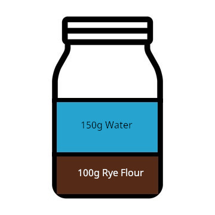
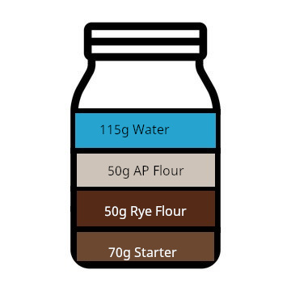
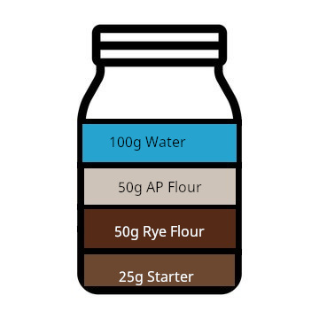

Sourdough Starter Guide
Prerequisites
Materials:
- Jars
- Small spatula
- Scale
- Digital Thermometer (Optional)
Ingredients:
- Stone ground rye flour
- Unbleached all-purpose flour
- Lukewarm water at 85℉
General Directions
- Start by recording the weight of your jar. All the following weights will be just for the ingredients, so it's helpful to know the weight of your jar.
- Warm up the water to a lukewarm amount. Add the weight of water to the jar.
- Add the flour amounts to the jar after the water.
- Using the spatula or a spoon, mix until there are no dry spots.
- Loosely cover the jar and let rest at room temperature for a day.
- After the first day, you will discard most of the mixture each day you feed. There will be an amount leftover in the jar each feeding and this will be labeled as "starter amount"
- Repeat every day. Try to feed around the same time each day. After day 7, your starter should be ready to go. When baking, instead of trashing your "discard" (the amount you take out of the jar before feeding), it will instead be added to the dough for the bake. Follow day 7 ingredients for guide to everyday feeding after intial.
Day 1

Ingredients:
- 100g rye flour
- 150g warm waterr
Day 2

Ingredients:
- 70g mature starter
- 50g rye flour
- 50g AP flour
- 115g lukewarm water
Day 3
Ingredients:
- 70g mature starter
- 50g rye flour
- 50g AP flour
- 115g lukewarm water
Day 4

Ingredients:
- 70g mature starter
- 50g rye flour
- 50g AP flour
- 100g lukewarm water
Day 5
Ingredients:
- 70g mature starter
- 50g rye flour
- 50g AP flour
- 100g lukewarm water
Day 6
Ingredients:
- 50g mature starter
- 50g rye flour
- 50g AP flour
- 100g lukewarm water
Day 7

Ingredients:
- 25g mature starter
- 50g rye flour
- 50g AP flour
- 100g lukewarm water